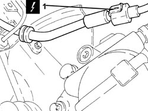
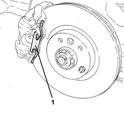
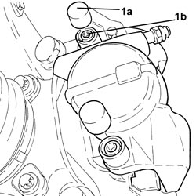
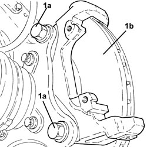
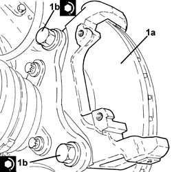
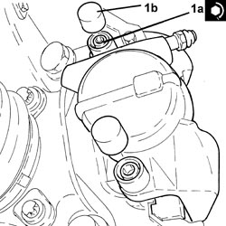

3310A57 FRONT BRAKE CALIPER BRACKET (ONE), LEFT OR RIGHT - R.R
- Path
- Procedures > 33 BRAKES > 3310 DISC BRAKES > 3310A FRONT DISC BRAKES > 3310A57 FRONT BRAKE CALIPER BRACKET (ONE), LEFT OR RIGHT - R.R
- Kind
- repair procedure (removal / refitting; the operation number is the code)
- Applies to
- engines: 2.2 JTS; all production periods
- Interactive page
- https://sloeber94.github.io/elrnDB-aBrrSpdr/en/#/946002116
Applies to: engines: 2.2 JTS; all production periods
 Removing
Removing
 Refitting
Refitting- Position the vehicle on a lift.
- Make sure that the ignition key is in the OFF position, then disconnect the battery terminal (-).
Description | Connector | |
|---|---|---|
- | Battery |
Op. 4450B02 LEFT FRONT WHEEL - R.R
1. Disconnect the electrical connection for the brake pad wear sensor and release the wiring from the fastenings.
Description | Connector | |
|---|---|---|
1 | Left brake pad wear sensor (switch) |

Applies to: engines: 2.2 JTS; all production periods
1. Remove the brake caliper traction spring.

Applies to: engines: 2.2 JTS; all production periods
1. Remove the plugs (1a) and undo the brake caliper fixing bolts (1b).

Applies to: engines: 2.2 JTS; all production periods
- Move the brake caliper out of its housing without disconnect the flexible pipe and secure it appropriately.
1. Undo the bolts (1a) and remove the front brake caliper bracket (1b).

Applies to: engines: 2.2 JTS; all production periods
Refitting
Removing1. Position the front brake calliper bracket (1a) in its housing and secure it tightening the bolts (1b) to the recommended torque.
Component | Fastening | dia | Value (daNm) | Validity |
|---|---|---|---|---|
Front brake calliper brackets | Bolt | M14 | 15.2 ÷ 16.8 | 1.8 1.9 JTS 2.2 JTS 1.9 JTD 8V 1.9 JTD 16V |

Applies to: engines: 2.2 JTS; all production periods
- Place the brake caliper in its housing.
1. Tighten the bolts (1a) fixing the brake caliper to the recommended torque and fit the plugs (1b).
Component | Fastening | dia | Value (daNm) | Validity |
|---|---|---|---|---|
Front brake callipers | Bolt | M8 | 2.5 ÷ 3.0 | 1.8 1.9 JTS 2.2 JTS 1.9 JTD 8V 1.9 JTD 16V |

Applies to: engines: 2.2 JTS; all production periods
- Refit the brake caliper traction spring in its seat.
- Connect the electrical connection for the brake pad wear sensor and fasten the electrical wiring.
Op. 4450B02 LEFT FRONT WHEEL - R.R
- Connect the negative battery terminal.
- Remove the vehicle from the lift.
Topics linked from this page (3)
Topics that link to this page (5)
- S017 FRONT SUSPENSION NOISE (WHISTLING/HUMMING)
- 3310A48 FRONT BRAKE DISC (ONE), LEFT OR RIGHT - R.R
- 3310A59 FRONT BRAKE DISC GUARD (ONE), LEFT OR RIGHT- R.R
- 4450C10 FRONT STEERING KNUCKLE (ONE), L/H OR R/H COMPLETE WITH WHEEL HUB - R+R WITH WHEEL REMOVED - CHECK WHEEL GEOMETRY SEPARATELY
- 4450C28 FRONT WHEEL HUB,LEFT OR RIGHT - R.R WITH WHEEL REMOVED, CHECK WHEEL GEOMETRY SEPARATELY